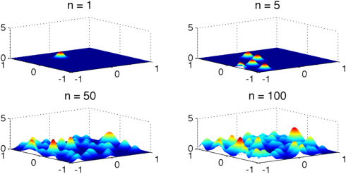
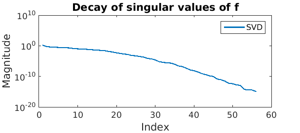
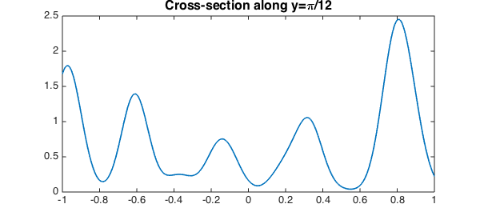
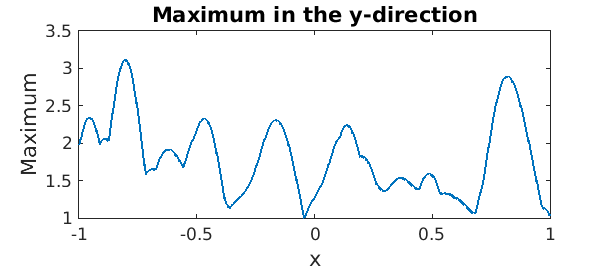
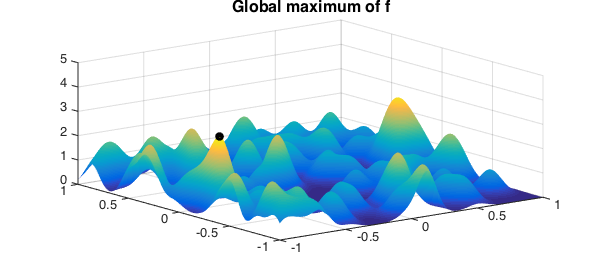

Adding bumps
A Gaussian bump is a rank-1 function because it is separable, i.e., it can be written as a product of two univariate functions [2]:
$$ e^{-\gamma(x^2+y^2)} = e^{-\gamma x^2}e^{-\gamma y^2}. $$
To illustrate Chebfun2, we can shift these Gaussian bump functions to arbitrary locations and add them together. In this experiment we add up $100$ of them:
FS = 'FontSize'; fs = 16;
gam = 100; j = 1;
f = chebfun2(0);
rng(1)
for n = 1:100
x0 = 2*rand-1; y0 = 2*rand-1;
df = chebfun2(@(x,y) exp(-gam*((x-x0).^2+(y-y0).^2)));
f = f + df;
if n==1 || n==5 || n==50 || n==100
subplot(2,2,j), plot(f), title(sprintf('n = %u',n),FS,fs), j=j+1;
zlim([0,5])
end
end

The surprise
Generically, the sum of $100$ rank 1 functions is a rank $100$ function. However, in this case the numerical rank is significantly less than the mathematical rank:
fprintf('Rank of function is %u\n',rank(f))
Rank of function is 56
Why the surprise?
If you write the bivariate function in terms of its singular value decomposition [2]
$$ f(x,y) \approx \sum_k \sigma_k \phi_k(x) \psi_k(y), $$
the singular values decay supergeometrically. This phenomenon is exploited in the Fast Gauss Transform [1]. Here is a plot showing the supergeometric decay:
clf, semilogy(svd(f))
title('Decay of singular values of f',FS,fs),legend('SVD')
xlabel('Index',FS,fs),ylabel('Magnitude',FS,fs)

Playing around
Once we have a function we can also see what it looks like along a cross- section (like along $y=\pi/12$), which is represented by a smooth chebfun:
plot(f(:,pi/12)), title('Cross-section along y=\pi/12',FS,fs)

Or, we can calculate its maximum along each column, a function which is represented by a piecewise smooth chebfun with several points of discontinuity of its slope:
plot(max(f)), title('Maximum in the y-direction',FS,fs)
xlabel('x',FS,fs), ylabel('Maximum',FS,fs)

Global maximum
We can also compute its global maximum, shown below as a black dot:
[m,X] = max2(f);
plot(f), hold on, plot3(X(1),X(2),m,'k.','MarkerSize',30), zlim([0,5])
title('Global maximum of f',FS,fs)

References
-
L. Greengard and J. Strain, The fast Gauss transform, SIAM Journal on Scientific Computing, 12 (1991), pp. 79-94.
-
A. Townsend and L. N. Trefethen, An extension of Chebfun to two dimensions, SIAM Journal on Scientific Computing, 35 (2013), C495-C518.